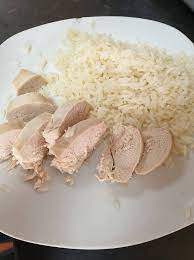

My Buddy Max's Chicken and Rice

Description
This dish, if one can call it that, is a creation of my good buddy Max. I watched him make this dish when we were living together and I simply had to share it with the world.
Ingredients
Rice
Three chicken breasts
Thats litterally it...
Steps
Completly wipe down all surfaces. Do not want to accidently contaminate the meal with any morsel of seasoning.
Place rice into pan (one and a half cups of water per cup of uncooked rice) and bring to a boil, then lower to a simmer and place lid on top.
In a seperate pan, cook the unseasoned chicken breasts until desired gray color.
Fluff rice once it is done and place a serving onto a plate, the rest goes into a tupperware container.
Cut cooked chicken into slices and place a serving on to the plate, the rest in the same tupperware container
Place leftovers into the fridge and then sit down with your plate.
Really look at what you just made...
Enjoy! (optional)
Home